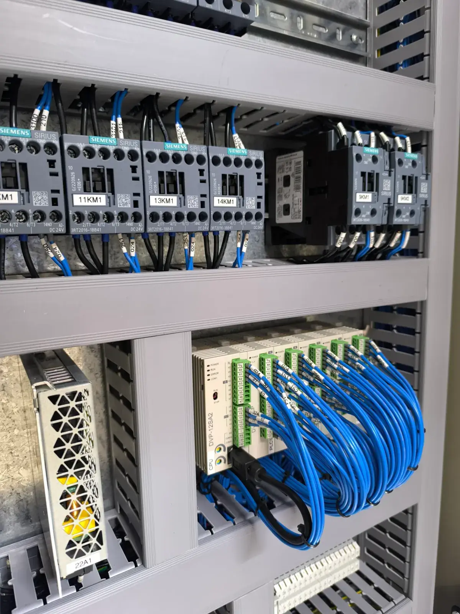
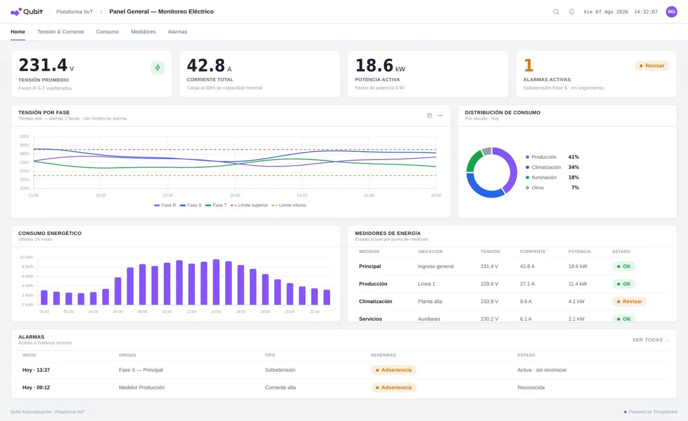
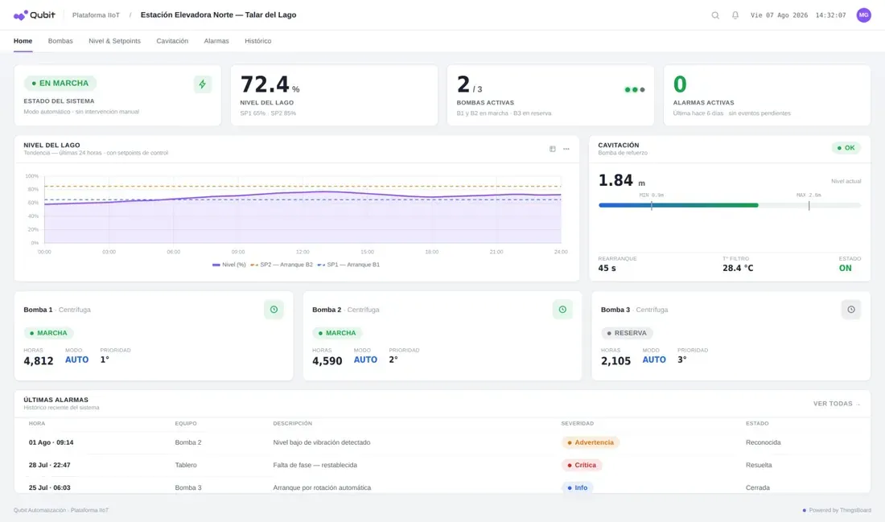

Water and wastewaterFerraro y Asociados: remote monitoring of a wastewater treatment plant
−90%in unnecessary technical visits
It connects to your PLCs and sensors, shows your plant as it really is, and alerts you before something fails.

Sentinel is the remote monitoring and control platform from Qubit. It integrates with the PLCs, sensors, and protocols already in your plant. It brings all the data together in a dashboard with the real layout of your equipment, and uses that data to alert you, log every event, and anticipate failures.

See and operate your equipment in real time from a PC, tablet, or phone, without being at the plant.
Automatic alarms by email or SMS, and AI that detects when equipment starts to degrade.
Auditable history of variables and events, with a daily operations report that is generated automatically.
Choose your application and see which variables Sentinel tracks in each case.
Extra fuel per mm of scale2%
Pressure, temperature, and burner status in real time, with an alarm for any deviation.
Extra energy with 0.3 mm of scale12%
Inlet and outlet temperatures, fans, and pumps, to protect performance and consumption.
Status, running hours, and alternation of each pump. Start or stop them from your phone.
Real-time level, an alert before a tank overflows or runs empty, and consumption history.
Loss from fouled membranes15–40%
Pressures, flows, and conductivity, so you know when to clean or replace the membranes.
Voltage, current, and consumption per circuit, with an alert for overvoltage or load peaks.
Is your process not on the list? Sentinel adapts to any type of plant: we integrate all areas and equipment in a single synoptic view.
Sentinel adds to what you already have, without replacing your equipment or changing the production process.
Sensors that measure what you need: temperature, pressure, level, flow, or conductivity.
An on-site gateway processes the data instantly and actuates the equipment.
The platform brings all the information together and shows it on a single screen.
AI analyzes the history, anticipates failures, and suggests when to intervene.
We assess your PLCs, the sensors you already have, and what you need to see or control.
We send you a detailed quote for sensors, gateway, and installation, together with the platform subscription.
We install the equipment, build the synoptic view of your plant, set up alarms and users, and start monitoring.
USD 130per month
Platform subscription, excl. VAT.
You add them to the subscription. We bill them monthly.
Questions about equipment, currency, or support? See the pricing questions.
Plants that Sentinel monitors and controls today.

Water and wastewater−90%in unnecessary technical visits
Do you have another question? Write to info@qubit.la or use the form. We reply within 1 business day.
No. Sentinel integrates with the industry-standard PLCs, sensors, and protocols that you already have. During the technical survey, we check your equipment and tell you what is necessary to connect it.
No. Sentinel reads and controls your equipment without changing how the plant produces. We coordinate the installation work with your team.
A PC, tablet, or phone, anywhere with an internet connection.
Both. From the same dashboard, you turn equipment on or off and adjust parameters, based on the permissions of each user.
Sentinel sends automatic alarms by email or SMS for any anomaly, and logs every event in the history.
It analyzes the data that Sentinel already collects, with no additional sensors. It anticipates when a variable will exceed a critical limit, calculates the health of each piece of equipment, detects deviations from normal behavior, and answers questions about your data.
Yes. All your plants or sites are on the same dashboard.
Each user has a profile with an access level. For example, a supervisor can see the plant but cannot operate equipment.
No. If a gateway or sensors are necessary, we quote them separately.
You add the packs you need (more devices, users, alarms, or SMS) without a change of plan. Sentinel is designed to grow with your plant.
Prices are in U.S. dollars, excl. VAT. You can pay in U.S. dollars or in Argentine pesos, at the Banco Nación selling exchange rate of the day before payment.
Training on the use of the platform is included. We bill technical support hours for changes separately (USD 50 per hour).
Tell us which equipment you want to monitor, and we schedule the visit. We reply within 1 business day.